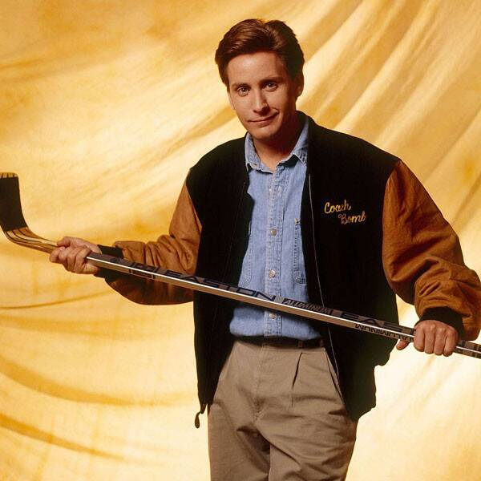
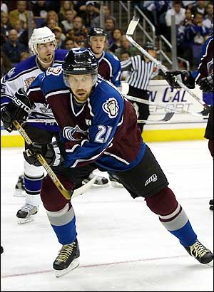
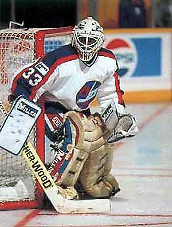

Gordon Bombay - Director of Hockey Development
Nationality: USA
Bio: Before he was the legendary youth hockey coach in Minneapolis, he was the best young american hockey talent before injuries sidelined his career. As the head of hockey development, he oversees all levels of training with a unique eye for talent.
Peter Forsberg - Head Coach
Nationality: Sweden
Bio: We are thrilled to have two-time Olympic Gold Medalist and two-time Stanley Cup champion be part of coaching staff. Peter played professional hockery for 19 seasons, include 13 in the National Hockey League. Forsberg is known for high hockey IQ, and physical play. He currently sits 9th in NHL history for career points-per-game.
Ryan Reaves - Special Teams Coach

Nationality: Canada
Bio: Local hockey fans are no stranger to Reavo. For 4 year, Reaves was the local enforcer for the Vegas Golden Knights. He was crucial cog in the year 1 team that made the Stanley Cup Finals, in fact it was Ryan Reaves late goal against the Winnipeg Jets that clinched the Western Conference for the Misfits. Known for his physical play and chemistry building personality, Reaves will help our youth players develop the toughness needed to win hockey games at a high level.
Nate Schmidt - Defensive Specialist

Nationality: USA
Bio: Nate Schmidt is another year 1 Misfit that we are thrilled to be a part of coaching staff. He was able to break into the National Hockey League as an undrafted free agent. His all-around versatility as a defenceman helped him have a 10 year career in the NHL. Working with Black Hole Hockey club, he will focus on developing defensive players.
Pokey Reddick - Goaltending Coach
Nationality: Canada
Bio: Before Vegas hockey was #VegasBorn, Pokey was already the local hockey authority. Known throughout the hockey world for overcoming scouting reports that he was too small, Pokey played professional hockey for 19 years including 7 years in the NHL. When his playing days ended, he returned to Las Vegas where he had spent years playing for the Las Vegas Thunder minor league team.